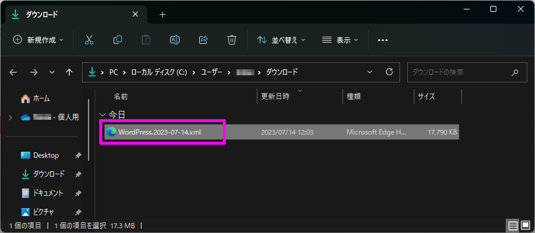
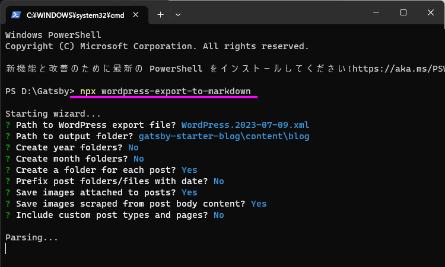

いろいろ思うことがあって WordPress から Gatsby へ移行しました。
Gatsby プロジェクトの作成 今回は gatsby-starter-blog を使います。
Gatsby Starter Blog とは？ “Gatsby Starter Blog”は、Gatsby.js を使用してブログを作成するためのスターターテンプレートです。
Gatsby.js は、React ベースの静的サイトジェネレーターで、データを GraphQL を介して取得します。
“Gatsby Starter Blog”は、ブログ投稿やページネーション、タグなど、ブログに必要な機能を兼ね備えており、Markdown 記法でブログを作成することができます。
あとカスタマイズも容易で、Gatsbyのプラグインを使って、SEO や、Google Analytics など、さまざまな機能を簡単に追加することができます。
適当なフォルダーで次のコマンドを実行する。
1 npx gatsby new gatsby-starter-blog https://github.com/gatsbyjs/gatsby-starter-blog
続いて次のコマンドでデバッグ実行
1 2 cd gatsby-starter-blog npm run develop
http://localhost:8000/ で開く
あとは、これをカスタマイズしてく。
WordPress からエクスポート WordPress のエクスポート機能を使って、XMLファイルをダウンロードする。
ダッシュボード > ツール > エクスポート の順で選択。
エクスポートする内容は すべてのコンテンツ を選択し、エクスポートファイルをダウンロードする。
XMLファイルがダウンロードできる。

インポート インポートには wordpress-export-to-markdown プラグインを使う。
wordpress-export-to-markdown とは？ wordpress-export-to-markdown は、WordPress の記事を Markdown 形式でエクスポートするためのプラグインです。
WordPress は PHP のコンテンツ管理システムであり、記事を HTML 形式で保存しています。
wordpress-export-to-markdown を使用すると、WordPress の記事を Markdown 形式でエクスポートできます。
これにより、エクスポートされたファイルを他のプラットフォームやブログシステムにインポートする際に、Markdown 形式を利用できます。
次のコマンドを実行すると、WordPress から記事や画像を Markdown 形式でダウンロードしてくれる。
1 npx wordpress-export-to-markdown
ウィザードにしたがってオプションを設定する。
1 2 3 4 5 6 7 8 9 10 Starting wizard... ? Path to WordPress export file? WordPress.2023-07-14.xml ? Path to output folder? gatsby-starter-blog/content/blog ? Create year folders? No ? Create month folders? No ? Create a folder for each post? Yes ? Prefix post folders/files with date? No ? Save images attached to posts? Yes ? Save images scraped from post body content? Yes ? Include custom post types and pages? No

./content/blog に記事の数だけフォルダーと Markdownファイル が作られる。
カスタマイズ gatsby-starter-blog は最小限の機能しか備わっていないので、ここからは自分好みにカスタマイズしていく。
gatsby-plugin-sitemap gatsby-plugin-sitemap
ビルド時にサイトマップを出力してくれるようになります。
google search console に登録するときに必要なため導入した。
gatsby-remark-external-links
外部リンクを開くときに「新しいタブで開く」ようになります。
gatsby-remark-autolink-headers
目次を自動で作ってくれます。
./src/templates/blog-post.js の section の前にコードを入れると目次が出力されます。
1 <div class="toc-002" dangerouslySetInnerHTML={{ __html: post.tableOfContents }} />
スタイルが何も当たっていないので、./src/style.css にスタイルを追記するとそれらしく見やすくなる。
gatsby-remark-images-medium-zoom
画像をクリックしたときに、ズーム表示してくれるようになります。
ページネーション gatsby-awesome-pagination
プロジェクトルートにある ./gatsby-config.js に次のコードを追記する。
1 const { paginate } = require(`gatsby-awesome-pagination`)
1 2 3 4 5 6 7 8 9 10 11 12 13 14 exports.createPages = async ({ graphql, actions, reporter }) => { ~~~ 既存処理 ~~~ ↓↓↓ 追記 ↓↓↓ // Create your paginated pages paginate({ createPage, // The Gatsby `createPage` function items: posts, // An array of objects itemsPerPage: 10, // How many items you want per page pathPrefix: ({ pageNumber }) => (pageNumber === 0 ? '/' : '/page'), // Creates pages like `/blog`, `/blog/2`, etc component: path.resolve('./src/templates/index.js'), // Just like `createPage()` }) ↑↑↑ 追記 ↑↑↑ }
上記修正をすると ./src/templates/index.js で ページネーションコンテキスト が使えるようになる。
pageQuery に skip と limit を追加1 2 3 4 5 6 7 8 9 10 11 12 13 14 15 16 17 18 19 20 21 22 23 export const pageQuery = graphql` query ($skip: Int!, $limit: Int!) { site { siteMetadata { title } } allMarkdownRemark(sort: { frontmatter: { date: DESC } } skip: $skip limit: $limit) { nodes { excerpt fields { slug } frontmatter { date(formatString: "YYYY/MM/DD") title description tags } } } } `
BlogIndex の引数に `` を追加1 2 3 const BlogIndex = ({ data, location, pageContext }) => { ~~~ 既存処理 ~~~ }
ページネーションを追加 ページの最後にページネーションを追加
1 2 3 4 <div> {pageContext.previousPagePath ? <Link to={pageContext.previousPagePath}>Previous</Link> : null} {pageContext.nextPagePath ? <Link to={pageContext.nextPagePath}>Next</Link> : null} </div>
サイト内検索 検索コンポーネントを作成 ./src/components/search.tsx を作成
1 2 3 4 5 6 7 8 9 10 11 12 13 14 15 16 17 18 19 20 21 22 23 24 25 26 27 28 29 30 31 32 import React, { Component, useEffect, useState } from "react" import { Paper, IconButton, InputBase } from "@mui/material" import SearchIcon from '@mui/icons-material/Search'; import { navigate } from "gatsby"; import { useLocation } from "@reach/router" // Search component const Search = () => { const location = useLocation(); const [searchValue, setSearchvalue] = useState(""); useEffect(() => { const query = new URLSearchParams(location.search); const search: string = query.get('s') ?? ""; setSearchvalue(search); }, []); const clickedSearch = () => { navigate(`/search/?s=${searchValue}`); } return ( <Paper sx={{ p: '2px 4px', display: 'flex', alignItems: 'center', width: 400 }} elevation={0} > <InputBase sx={{ ml: 1, flex: 1 }} placeholder="サイト内を検索" value={searchValue} onChange={(event) => { setSearchvalue(event.target.value); }} /> <IconButton type="button" sx={{ p: '10px' }} onClick={clickedSearch}> <SearchIcon /> </IconButton> </Paper> ) } export default Search;
これを ./src/components/layout.js の header と main の間に追加
1 2 3 4 5 6 7 8 9 10 <div className="global-wrapper" data-is-root-path={isRootPath}> <header className="global-header">{header}</header> <Search /> <main>{children}</main> <footer> © {new Date().getFullYear()}, Built with {` `} <a href="https://www.gatsbyjs.com">Gatsby</a> </footer> </div>
検索結果ページを作成 ./src/pages/search.tsx を作成
1 2 3 4 5 6 7 8 9 10 11 12 13 14 15 16 17 18 19 20 21 22 23 24 25 26 27 28 29 30 31 32 33 34 35 36 37 38 39 40 41 42 43 44 45 46 47 48 49 50 51 52 53 54 55 56 57 58 59 import React, { useEffect, useState } from 'react' import { graphql, useStaticQuery } from 'gatsby' import { useLocation } from "@reach/router" import BlogIndex from '../templates' const SearchPage = () => { const location = useLocation(); const pageQuery: any = useStaticQuery(graphql` query { site { siteMetadata { title } } allMarkdownRemark(sort: { frontmatter: { date: DESC } }) { nodes { excerpt fields { slug } frontmatter { date(formatString: "YYYY/MM/DD") title description tags } } } } `) const [data, setData] = useState(pageQuery); useEffect(() => { const query = new URLSearchParams(location.search); const search: string = query.get('s') ?? ""; if (search == "") { setData({ ...{ site: pageQuery.site }, ...{ allMarkdownRemark: { nodes: [] } } }); return; } const posts = pageQuery.allMarkdownRemark.nodes.map((x: any) => { const target = Object.assign({ excerpt: x.excerpt }, x.fields, x.frontmatter); const key = `${target.title.toLowerCase()} ${target.tags?.join(" ").toLowerCase()} ${target.date.toLowerCase()} ${target.description?.toLowerCase()}` return { ...x, ...{ key: key } }; }); const filtered = posts.filter((e: any) => { return e.key.indexOf(search) !== -1; }) setData({ ...{ site: pageQuery.site }, ...{ allMarkdownRemark: { nodes: filtered } } }); }, [location]); return ( <BlogIndex data={data} location={location} /> ) } export default SearchPage
右上の検索すると、URLパラメーター で検索ページに遷移して、記事が抽出される。
タグ一覧 タグ一覧ページを作成 ./src/pages/tag.tsx を作成
1 2 3 4 5 6 7 8 9 10 11 12 13 14 15 16 17 18 19 20 21 22 23 24 25 26 27 28 29 30 31 32 33 34 35 36 37 38 39 40 import React, { useEffect, useState } from 'react' import Layout from '../components/layout' import { graphql, useStaticQuery, Link } from 'gatsby' import { useLocation } from "@reach/router" const TagPage = () => { const location = useLocation(); const pageQuery: any = useStaticQuery(graphql` query { site { siteMetadata { title } } allMarkdownRemark { group (field: {frontmatter: {tags: SELECT}}) { tag: fieldValue totalCount } } } `) const [siteTitle, setSiteTitle] = useState(pageQuery.site.siteMetadata.title); const [group, setGroup] = useState(pageQuery.allMarkdownRemark.group as []); return ( <Layout location={location} title={siteTitle}> <h1>タグ</h1> <Stack direction="row" spacing={2} useFlexGap flexWrap="wrap"> {group.slice().sort((a: any, b: any) => (a.totalCount - b.totalCount)*-1).map((item: any) => ( <Button key={item.tag} component={Link} variant="outlined" size="small" to={`/tag/${item.tag}/`} startIcon={<LocalOfferIcon />}>{item.tag}({item.totalCount})</Button> ))} </Stack> </Layout> ) } export default TagPage
このページを開くとタグ一覧が表示される。